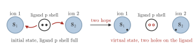
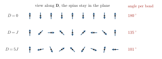

Advanced Quantum Materials 2027 · All lectures · Lecture notes
Session 6. Classical Magnetism and Magnons
6.11 Superexchange as the origin of ferromagnetic coupling
The direct \(t^2/U\) mechanism of Section 6.9 is always antiferromagnetic, but many real magnetic materials are ferromagnets. So a ferromagnetic coupling needs a different microscopic mechanism, and it usually requires an intermediate atom, called a ligand, between the two magnetic ions, instead of a single direct hop. Let us take two transition-metal ions, for example cobalt, iron or nickel, connected by a ligand such as oxygen. As before, electrons can hop directly between the two metal sites, and this channel is antiferromagnetic as in Section 6.9. However, there is a second virtual process. An electron hops from the ligand onto one metal ion, and another electron hops from the ligand onto the other one. The two electrons are now on the metal ions, and this leaves a virtual state with two holes in the \(p\) shell of the ligand, which was full before. Depending on which \(d\) orbitals take part and on the metal-ligand-metal bond angle, the energy correction from this virtual channel with two holes on the ligand can favor the ferromagnetic configuration over the antiferromagnetic one, and in this way it changes the net sign of the effective coupling. The systematic version of this argument is given by the Goodenough-Kanamori rules, which predict the sign of the exchange coupling from the orbital filling and the bond geometry. These rules can also be derived systematically from self-consistent multi-orbital calculations, for instance with density functional theory. This material comes from the slides and the transcript, and there is no dedicated notebook exercise for it in this session, since the exercises of the notebook stay within the single-orbital Hubbard model.


6.12 Anisotropic exchange with Dzyaloshinskii-Moriya, Ising and Kitaev terms
In (6.5) we assumed that the coupling is an isotropic scalar product, \(\mathbf S_i\cdot\mathbf S_j\), which is what the rotational spin symmetry requires when there is no spin-orbit coupling. Once spin-orbit coupling is included in the underlying electronic Hamiltonian, other spin couplings with lower symmetry become allowed. Three of them appear often in real materials, and we list them now.
Antisymmetric, or Dzyaloshinskii-Moriya, exchange, \[H_\text{DM} = \sum_{\langle ij\rangle} \mathbf D_{ij}\cdot\big(\mathbf S_i\times\mathbf S_j\big),\] which is a cross product and not a dot product. It requires broken mirror symmetry, which is the reason why it is strong at surfaces and interfaces, where the substrate itself breaks this mirror symmetry. It favors neighboring spins rotated by roughly \(90^\circ\) with respect to each other, so it favors noncollinear order, which is often a spiral. Schematic Schematic 6.5 shows how the angle between neighbors depends on the strength of the term.

Anisotropic, or Ising-like, exchange, which is a coupling of a single component such as \(\Lambda\, S_i^z S_j^z\). It favors an easy axis, or an easy plane for the opposite sign, which means that the system magnetizes more easily along one direction than along another.
Kitaev interaction, which is a coupling that depends on the bond, on a lattice of honeycomb type. It has an \(S^x_iS^x_j\) term on one bond direction, \(S^y_iS^y_j\) on a second one and \(S^z_iS^z_j\) on a third one, \[H_\text{Kitaev} = \sum_{\langle ij\rangle \in x\text{-bonds}}\! K\, S_i^xS_j^x \;+\!\!\sum_{\langle ij\rangle \in y\text{-bonds}}\!\! K\, S_i^yS_j^y \;+\!\!\sum_{\langle ij\rangle \in z\text{-bonds}}\!\! K\, S_i^zS_j^z.\] Even on a bipartite honeycomb lattice, where the geometry alone would not give any frustration, this dependence on the bond is frustrating by itself, since no single spin orientation can satisfy the three types of bonds at the same time (figure 6.4). This interaction is what makes the Kitaev model a paradigm for quantum spin liquids, and this is why we point it out here explicitly, as an important preparation for the material on frustrated magnets in sessions 7 and 8.

The underlying electronic Hamiltonian has no spin-orbit coupling. Which exchange couplings between neighboring spins does the spin-rotation symmetry allow?
Show the answers
- A. ✗ False
This is false. Take \(\mathbf D\cdot(\mathbf S_i\times\mathbf S_j)\) with \(\mathbf D\) along \(z\). After a global rotation of the spins by \(90^\circ\) about \(x\) it becomes a term along \(y\), so the energy changes and the term is not allowed.
- B. ✓ True
This is true. Without spin-orbit coupling the spin space can be rotated freely, and only the rotation-invariant scalar product survives. The other terms need spin-orbit coupling, which ties the spin to the lattice.
- C. ✗ False
This is false. The term \(K S_i^zS_j^z\) becomes \(K S_i^xS_j^x\) after a rotation of the spins by \(90^\circ\) about \(y\). The energy of a given state then changes, so it is not rotation invariant.
Notebook check-in: session6.ipynb, “(Exercise) Non-collinear magnetism from spin-orbit coupling”
Add a term of Dzyaloshinskii-Moriya type to the mean-field Hamiltonian, and see how the ground state tilts away from collinear order. This is the electronic counterpart of the statement above for the spin model.
Try it. In the cell, the chain gets h.add_rashba(1.) at U=10.. Run it with and without that line. Without it, neighboring spins are antiparallel, and with it the angle between neighbors moves away from 180 degrees.